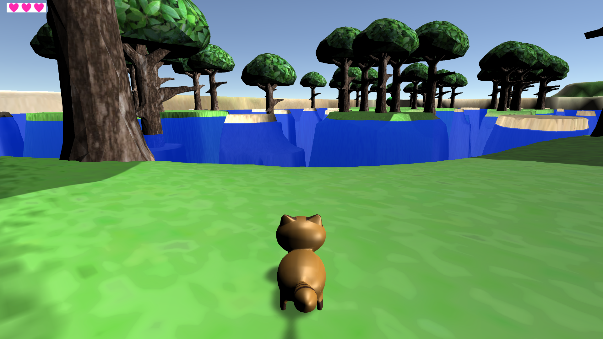
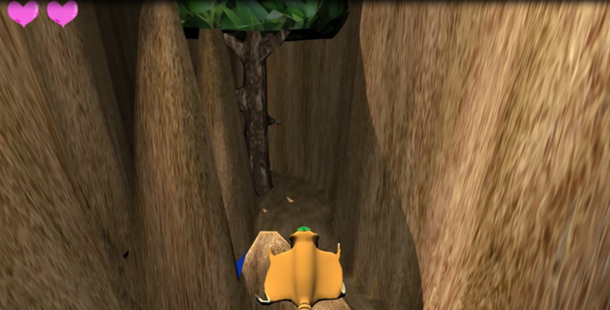
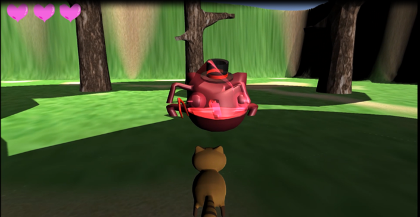

コンセプト：変化（へんげ）を駆使して困難に立ち向かおう！！
|  |  |  |
PV
作品ダウンロード
作品ZIPファイルをダウンロードブックレットダウンロード
ブックレットファイルをダウンロード制作人数
7人
担当
プロジェクトリーダー・制作進行・プログラマー・企画
制作目的
東京ゲームショウにて東京工科大学・日本工学院専門学校の展示ブースへの出展
プラットフォーム
PC
制作環境
Unity
ターゲット
アクションゲームが好きな小学校高学年
制作期間
半年間
制作について
プロジェクトリーダー、企画、プログラマー、制作進行と多くの役割をやらせていただきましたが、「企画の白紙化」「制作進行の大幅な遅れ」「プログラムエラー」「学業・アルバイトとの両立」と様々な困難がありました。
メンバーとのコミュニケーションが不足していることが原因だと考え、趣味の話題から話を広げ普段から連絡を取り合えるように心がけました。
また、私はプレイヤーの行動やシステム周りをプログラマーとして担当しましたが、初めてゲーム制作でプログラムを書いたので戸惑うことが多かったです。しかし、わからなかったら先生や先輩、メンバーに聞くことで乗り切ることができ、ゲームを一からプログラムを書いて作っていき少しずつ形になっていくことに面白さを感じました。